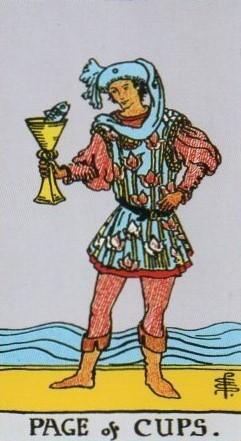
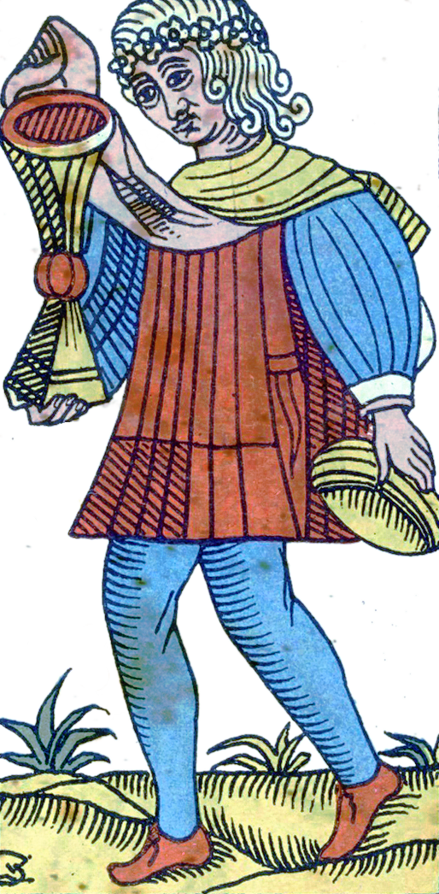
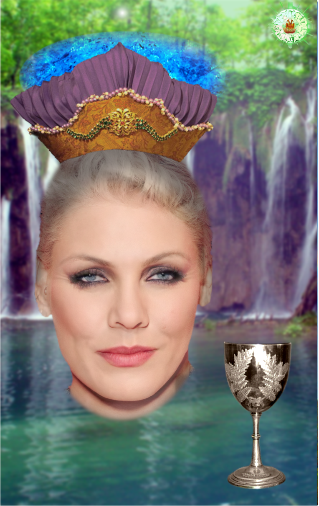
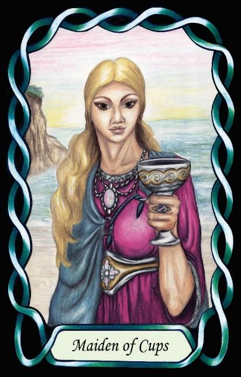

Page of Cups
The Performer (ESFP – SeFi)




Page |
Concrete Collaborative |
||
Social, political |
|||
Extroverted Sensing Introverted Feeling |
|||
8.5% of population |
|||
Example: Pink, Cameron Diaz |
|||
Meaning of Life: Having fun |
|||
Astrology: Scorpio |
|||
Pages of Cups are warm, expressive, and socially magnetic individuals who bring emotional vitality into the world around them. As SF Pages, they are concrete, collaborative, and deeply attuned to the feelings of others. Their extroverted sensing gives them a vivid awareness of the present moment, allowing them to respond with spontaneity, charm, and authenticity.
Their introverted feeling provides a strong internal value compass. They know what feels right, what feels meaningful, and what aligns with their personal sense of beauty and emotional truth. This combination of Se and Fi makes them expressive, empathetic, and naturally gifted at creating emotional resonance with others.
Placed in the Water suit of Cups, their sensitivity becomes outwardly expressive. They are the performers, entertainers, and emotional connectors of the Cups domain — individuals who lift spirits, create joy, and bring people together through shared experience. They excel at reading the emotional atmosphere and adjusting their behaviour to create harmony, warmth, and delight.
Pages of Cups thrive in environments where they can interact freely, express themselves, and bring positivity to others. They are at their best when creating experiences — whether through art, humour, storytelling, or simple presence. Their emotional intelligence is practical and immediate: they know how to make people feel seen, valued, and included.
At their core, they seek enjoyment and connection. Their meaning in life is found in shared moments, emotional authenticity, and the beauty of human interaction. They are the Performers of the Cups suit — expressive, heartfelt, and socially radiant.